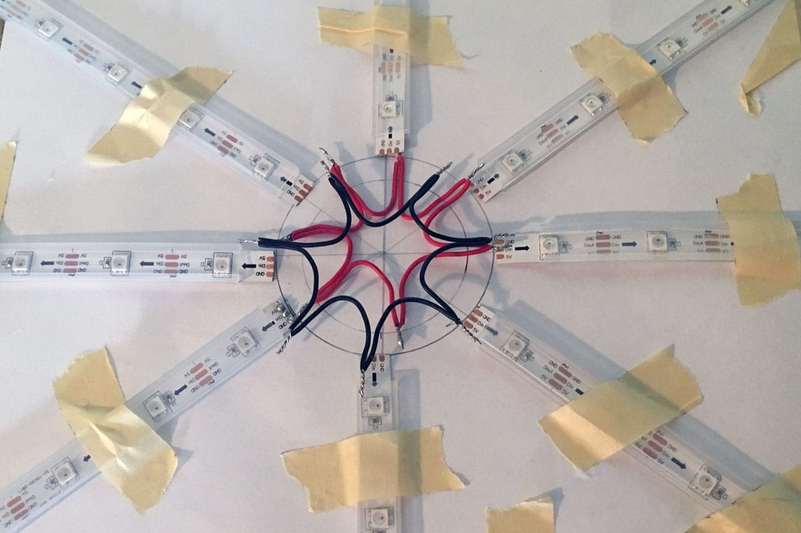
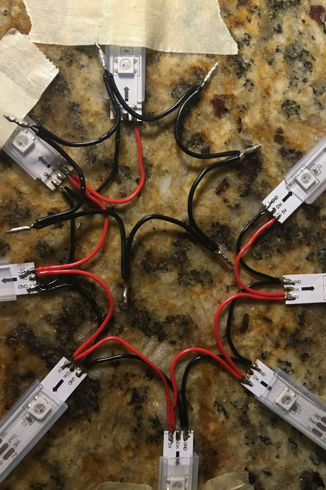
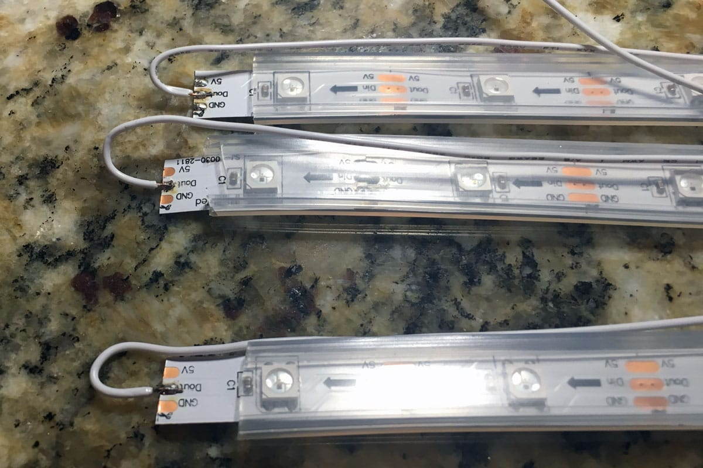
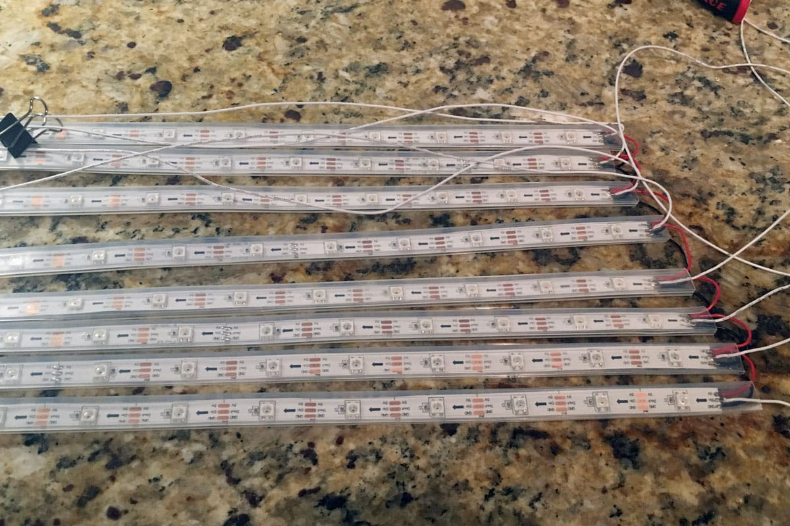
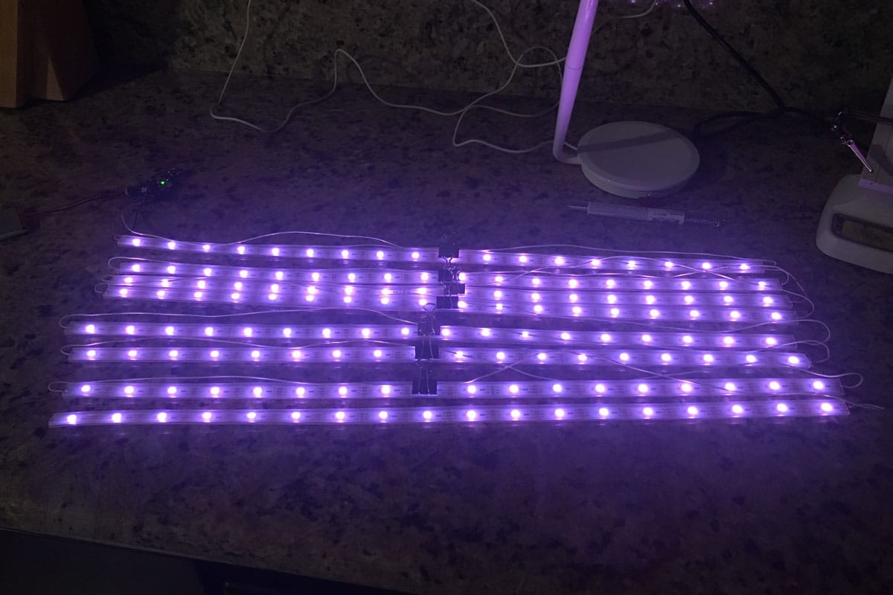
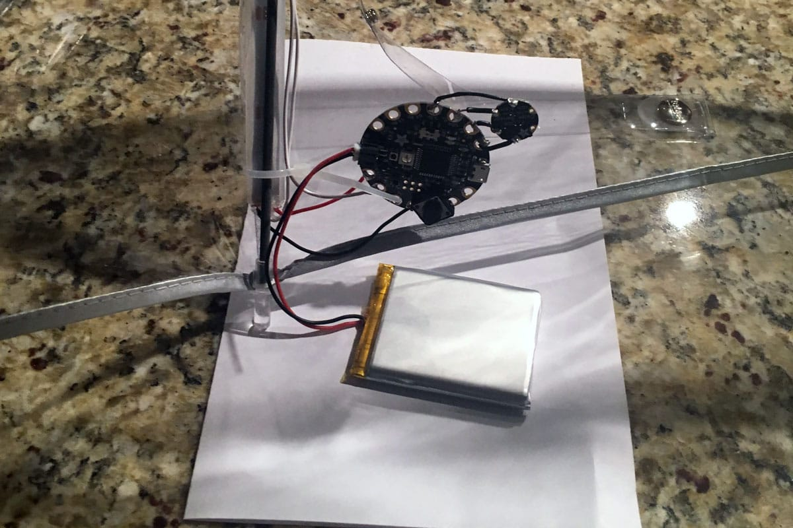
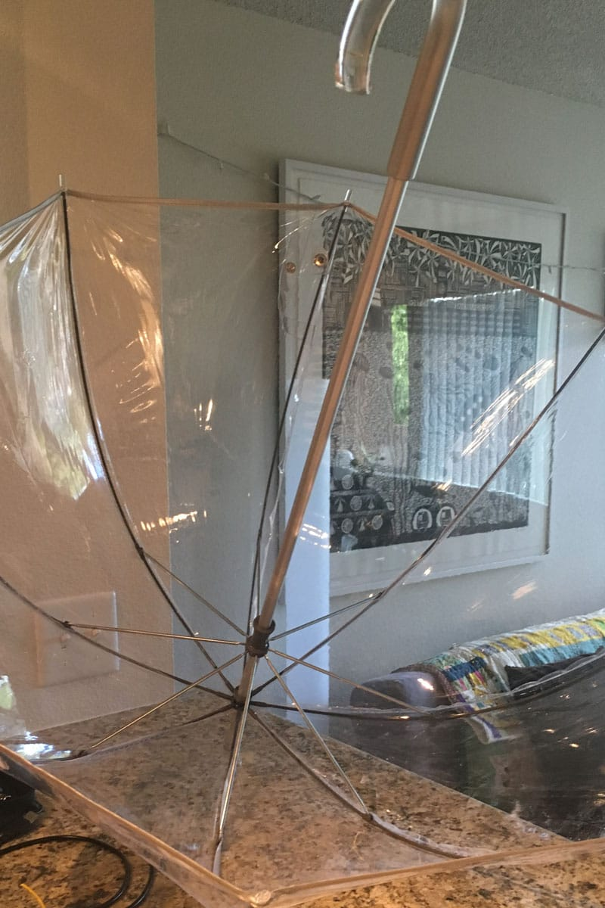
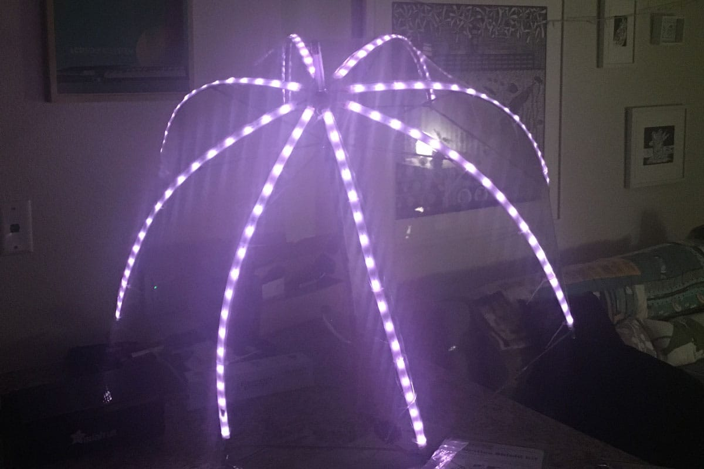
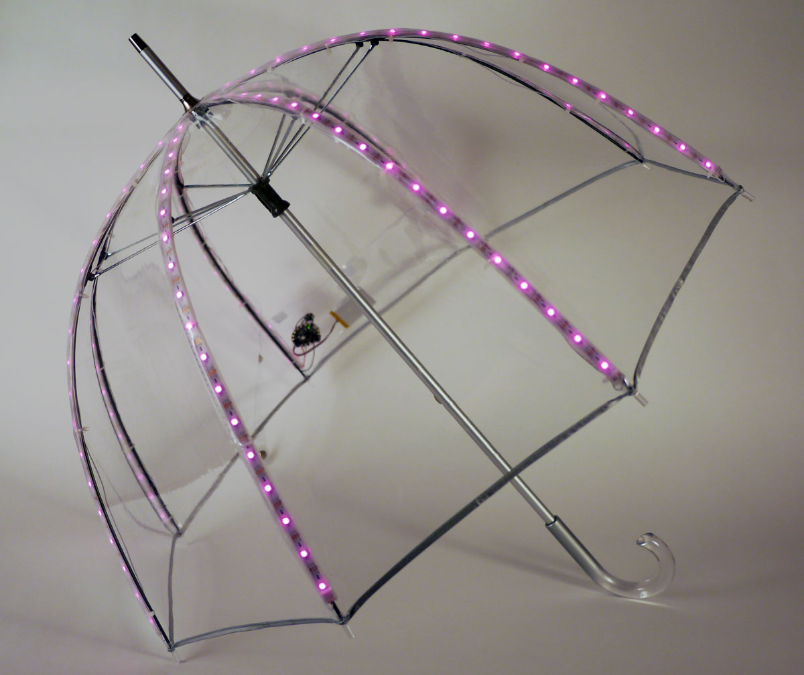

To allow flexibility at the top of the umbrella, the wires were fashioned into seven arcs. I twisted the wires together and placed solder on the joints to both secure the twists and make soldering to the strips easier.

Top Wires
The power arcs in red and the ground arcs in black being attached to the strip tops.

Wire Gage
Initially 22 gage wire was used to create the ground and power arcs but I replaced this with more flexible 28 gage wire. I frequently have to remind myself that the higher the number, the smaller the wire.

Data Wires
To keep the animation smooth, the data from top of the one strip needs to be connected to the bottom data port of the next strip. This calls for long wire to be treaded down the ribs with the strips.

Completed Wiring
Here all the strips have been cut to the correct lengths and wired in sequence.

Testing the Strips
I tested the strips before placing them into the umbrella to make sure all the connections were correct.
A video of the LED animation being tested.

Battery and Microcontroller
The battery and Adafruit Flora are placed at the bottom of a rib. A clear vinyl pouch was built to protect these electronics in case any rain splashed up inside the umbrella.

Preparing the Umbrella
All superstitions of having an open umbrella indoors were suspended for this project. I cleaned the vinyl and prepared the umbrella for the LED strip placement.

First Test in the Umbrella
This is the was the magic moment! Getting the LED strips placed along the ribs and testing everything before using electric ties to do final fastening. I also sewed the strips to the pastic of the umbrella with invisible thread to prevent slippage.

Complete Umbrella
The vinyl pouch can be seen at the back of the umbrella as well as the electric ties which secure the strips to the ribs.